Developer's Perspective
How the network was put together, from the lab platform up to automation, and how each part evolved.
Lab Platform and Hardware
Everything in this project runs on virtual Cisco devices, so the lab platform had to work before any networking could start. Getting it to work took the first five weeks, and the platform changed three times along the way.
Starting point: GNS3 on an ARM laptop
My design spec planned to run GNS3 on my own laptop, a Dell XPS 13 with a Snapdragon X Elite processor. During setup I found that Cisco's virtual router and switch images (IOSv and IOSvL2) are built for x86 processors and cannot run on ARM hardware. This was the project's first major blocker. It sent me back to research before I could configure a single device.
Comparing the options
I compared four ways to get an x86 lab: a borrowed x86 laptop, a cloud virtual machine, Cisco Modeling Labs (CML), and FRRouting running in Containerlab. I chose a loaner laptop from the CSS department because it kept my Cisco-based plan, which matches the jobs I am applying for, at no cost. FRRouting stayed as the backup. A classmate at Standup 1 also suggested FRRouting, pointing out that learning one network operating system makes it easier to learn others.
Switching to EVE-NG and real Cisco images
Two problems remained: I had no legal source for Cisco images, and the loaner could only download software on the campus network. My expert, Glenn, solved the first problem. He recommended EVE-NG over GNS3 as the platform network professionals use for practice labs, and he provided IOSv, IOSvL2, and ASAv (firewall) images from his Cisco Modeling Labs access. While I waited for campus access, I built the HQ design in Cisco Packet Tracer on my own laptop. That showed the design itself was not tied to any one platform.
The virtualization block and the final setup
On the loaner, EVE-NG would not start its nodes. EVE-NG runs inside VMware, and its Cisco nodes are virtual machines inside that VM, so the lab needs nested virtualization: the CPU's VT-x feature has to pass through to the inner VM. Windows security features (Virtualization-Based Security, Memory Integrity, and Hyper-V) hold on to VT-x and block nested virtualization, and the loaner's managed settings would not let me turn them off. I moved the lab to an MSI GS66 laptop (Intel Core i9, 32 GB RAM) and added a separate "Lab mode" boot entry with those features turned off. Then I installed VMware Workstation Pro and EVE-NG Community and uploaded the three images. EVE-NG only recognizes an image when its folder name starts with the right prefix (vios, viosl2, asav) and contains a single virtioa.qcow2 disk file.
I wrote these hardware requirements at the top of my README, so the next person can check their computer before losing weeks the way I did.
Checkpoint 0: proving the platform works
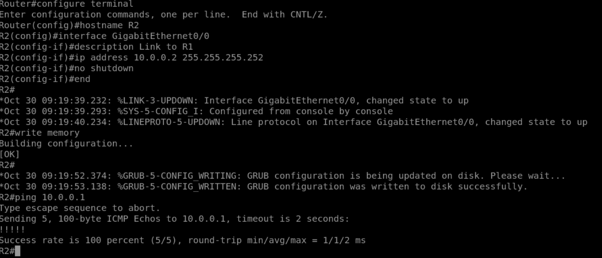
The first test was the smallest possible network: two IOSv routers connected Gi0/0 to Gi0/0, with 10.0.0.1/30 and 10.0.0.2/30. A /30 subnet has exactly two usable addresses, which is why it's used for router-to-router links like the WAN links in this design. A 5/5 ping meant nested virtualization, the images, and EVE-NG's virtual cabling all worked. Every later module builds on this.
Maintaining the platform
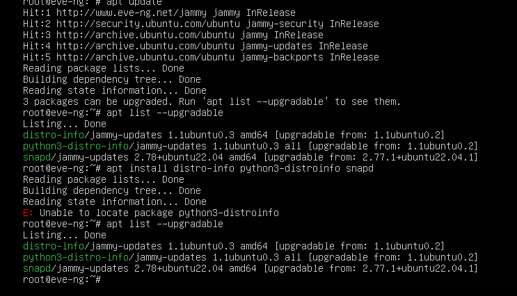
Before building Module 1, I updated the EVE-NG VM. Three packages stayed "upgradable" because of Ubuntu's phased updates, not because anything was broken. The error in the screenshot came from my own typo in a package name. The update also restarted the tomcat9 web service, and that broke the browser (HTML5) console's login session. Logging out of the web interface and back in fixed it, and the fix is now in my troubleshooting table. I now take a VMware snapshot before any update.
Network Design and Architecture
The network models a small company: a headquarters office (HQ) and a branch office, connected through a simulated internet service provider (ISP). The design separates traffic into VLANs at each site, routes between the sites with OSPF, and keeps a management network for automation.
The original design
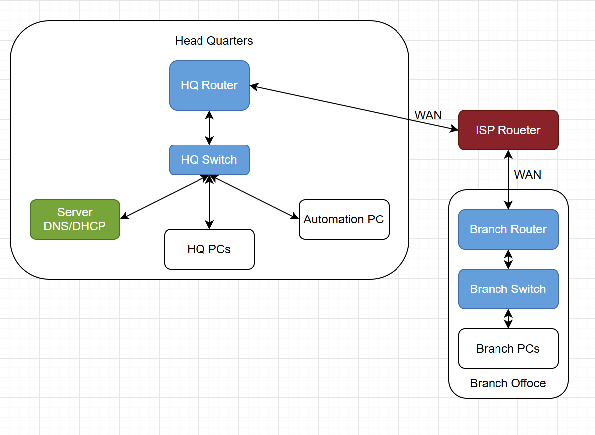
The first diagram shows the main parts. Each office has a router and a switch, a simulated ISP router sits between the offices, one server at HQ provides DHCP and DNS for both sites, and an automation PC runs the Python scripts. It shows what connects to what, but not the VLANs, addressing, or security that an engineer would need to build it.
VLAN and IP addressing plan
The HQ plan uses one VLAN per type of device, with the VLAN number built into the subnet (VLAN 10 → 10.1.10.0/24). Anyone reading a config can tell which VLAN an address belongs to.
| VLAN | Name | Purpose | Subnet | Gateway |
|---|---|---|---|---|
| 10 | USERS | Employee computers | 10.1.10.0/24 | 10.1.10.1 |
| 20 | SERVERS | DHCP/DNS server | 10.1.20.0/24 | 10.1.20.1 |
| 30 | VOICE | IP phones | 10.1.30.0/24 | 10.1.30.1 |
| 40 | GUEST | Visitors | 10.1.40.0/24 | 10.1.40.1 |
| 99 | MGMT | Device management and automation | 10.1.99.0/24 | 10.1.99.1 |
| 999 | NATIVE | Unused native VLAN for trunks | none | none |
Other design choices that carry through every module:
- Native VLAN 999 with no devices. Trunks send native-VLAN traffic untagged, and the default (VLAN 1) can be abused in VLAN-hopping attacks. Using an empty VLAN means stray untagged frames land nowhere.
- A dedicated management VLAN (99). The switch's management address and the automation PC live here, apart from user traffic.
- A loopback address on each router (10.255.0.1 on HQ-R1), planned as the OSPF router ID. A loopback never goes down, so the router ID stays stable.
- /30 subnets on WAN links, since each link only connects two routers.
How expert feedback changed the design
After reviewing the design, Glenn pointed out that a working network is not finished until it is secure. He suggested ACLs between VLANs (for example, keeping the guest VLAN away from the servers), a firewall at the branch, sending branch internet traffic through HQ, and site-to-site and remote-access VPNs. Most of these fit the second quarter, so the network gets built first and then secured. The ASAv firewall image he provided makes the branch firewall possible.
HQ Network: VLANs and Inter-VLAN Routing
Module 1 builds the headquarters network: one router (HQ-R1), one switch (HQ-SW1), and test PCs in three VLANs. The switch keeps the VLANs separate, and the router routes between them over a single trunk link, a design called router-on-a-stick. I typed every command instead of pasting it, so I would understand what each line does.
Access ports: putting devices into VLANs
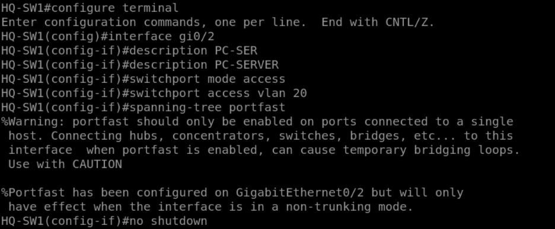
Each PC port is set with switchport mode access. A new port defaults to "dynamic auto," which negotiates with whatever is plugged in (DTP), so a device pretending to be a switch could turn it into a trunk and reach every VLAN. Setting the mode myself closes that gap. Portfast skips Spanning Tree's roughly 30-second wait, which is safe for a single PC. The warning IOS prints is serious: portfast on a port that leads to another switch can cause a broadcast storm.
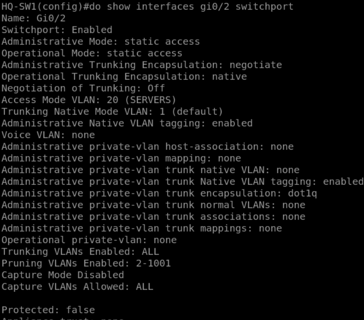
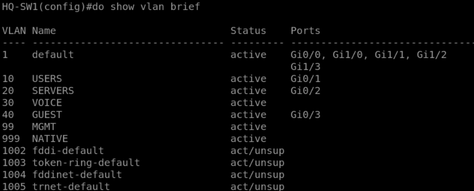
Creating a VLAN and putting ports into it are separate steps. VLANs 30, 99, and 999 exist but have no ports yet. Gi0/0 still sits in VLAN 1 here because it hasn't become a trunk.
The trunk: many VLANs over one cable
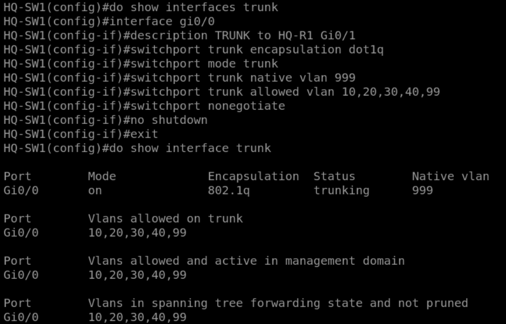
The link to the router must carry every VLAN, so it is an 802.1Q trunk that tags each frame with its VLAN number. IOSvL2 also supports Cisco's older ISL tagging, so encapsulation dot1q must be chosen before the port can become a trunk. The allowed list is limited to the VLANs HQ actually uses, and nonegotiate turns off DTP. One lesson from this step: switchport trunk allowed vlan replaces the list instead of adding to it. Changes must use add or remove, or one command can cut every VLAN off from the router.
Management address on the switch
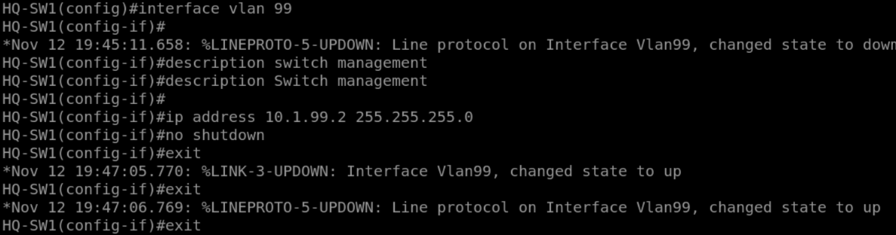
A switch moves frames by MAC address and needs no IP address to do its job. It needs one so I can reach it over SSH and so the automation scripts can manage it. That address lives on a switch virtual interface (SVI) in the management VLAN. The SVI only came up after the trunk carrying VLAN 99 was active.

Router-on-a-stick on HQ-R1
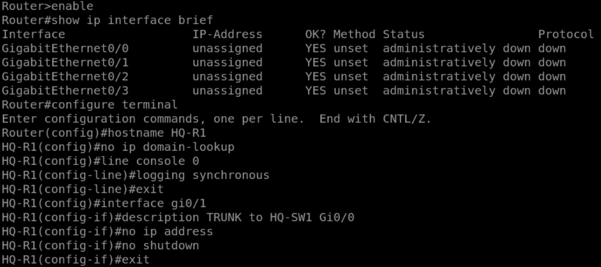
Switch ports are on by default, but router ports are off until an administrator enables them. The physical port Gi0/1 gets no IP address: it is only the "stick." Each VLAN gets a subinterface (Gi0/1.10, .20, .30, .40, .99) with encapsulation dot1Q matching the VLAN tag and the .1 address as that VLAN's default gateway.
This step changed between the Packet Tracer practice build and the EVE-NG build. In Packet Tracer I created a subinterface for the native VLAN (Gi0/1.999). In EVE-NG I left it out on purpose: VLAN 999 has no devices, so untagged frames have no subinterface to handle them and the router drops them. No legitimate traffic should ever cross the trunk untagged, so dropping it is the safer design.
Test PCs
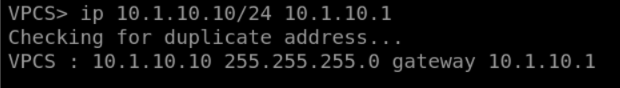
The test PCs are VPCS nodes, minimal virtual PCs that can set an address, ping, and trace. Each PC's gateway is the router subinterface for its VLAN. In Module 3, the DHCP server replaces these static addresses.
Branch Office and WAN Routing (OSPF)
Status: next module to build.
Module 2 adds the branch office (a router, a switch, and test PCs) and an ISP router between the two sites. Each WAN link is a /30 subnet, the same kind of link proven in Checkpoint 0. OSPF will run on all three routers, so each one learns the other offices' networks automatically instead of every route being typed by hand. The loopback addresses become the OSPF router IDs. Following Glenn's advice, branch internet traffic will be routed through HQ, which keeps security policy in one place.
The planned checkpoint: a branch PC pings an HQ PC, show ip ospf neighbor shows a FULL adjacency on every link, and a trace shows the path through the ISP router.
Network Services: DHCP and DNS
Status: planned after Module 2.
Module 3 adds a Linux server in the SERVERS VLAN (10.1.20.0/24) that hands out IP addresses (DHCP) and resolves names (DNS) for both offices. DHCP requests are broadcasts, and routers do not forward broadcasts, so each router subinterface will get an ip helper-address that relays requests to the server. The branch can then use a server at HQ. Replacing the static addresses on the test PCs with DHCP becomes the Module 3 checkpoint.
Automation with Python and Netmiko
Status: in progress, starting with SSH access to the devices.
The automation side uses Python with Netmiko, a library that logs in to network devices over SSH, sends commands, and returns the output for the script to read. The scripts will run on a Linux automation VM inside EVE-NG, connected to the management VLAN (99), so they reach every device the same way an administrator would.
The first step is enabling SSH on each device: a domain name and RSA key, a local admin account, SSHv2 only, and SSH (not Telnet) on the virtual terminal lines. The planned scripts, in order:
- Show-command script: runs commands like
show ip interface briefon every device and collects the output. - Backup script: saves each device's running configuration to the GitHub repo, so any device can be restored.
- Check script: runs each module's checkpoint tests automatically (see Testing and Verification).
- Configuration script: pushes configurations to devices. In Survey #1, the stakeholder rated this the most useful feature.
The automation VM sits in VLAN 99 and the test PCs sit in other VLANs, so a ping from the VM to a PC has to cross the router. That makes the VM a true test of inter-VLAN routing, not just of reachability.
Testing and Verification
Every module ends with a checkpoint: a short set of tests with expected results written down before running them. If a checkpoint fails, the build doesn't move forward.
Checkpoint 1: inter-VLAN routing
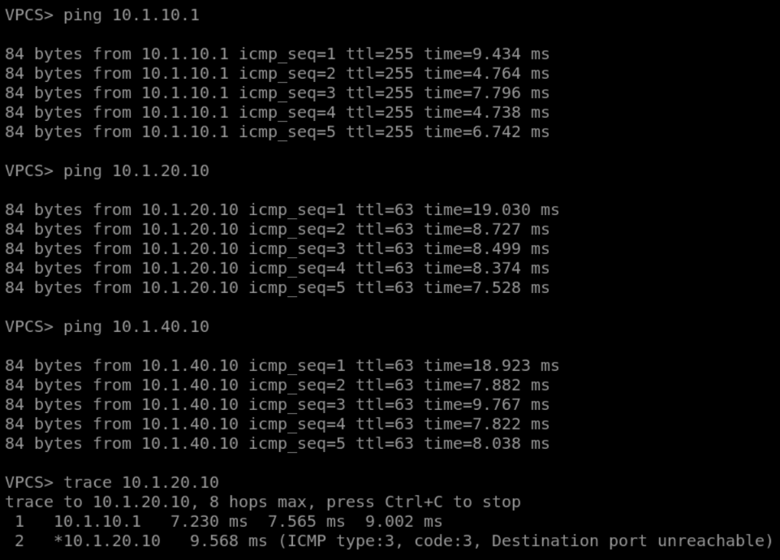
The TTL values prove the path, not just the connection. HQ-R1 creates its own replies with TTL 255, which is why the gateway answers with 255. VPCS starts packets at TTL 64, and each router a packet crosses subtracts one, so replies from PCs in other VLANs arriving with TTL 63 crossed exactly one router. The trace confirms it: hop 1 is the gateway, hop 2 the destination. The "Destination port unreachable" on the last hop is normal. VPCS traces to an unused port, and that reply is how trace knows it reached the end. Two PCs on the same switch still go through the router because different VLANs are separate networks.
Breaking it on purpose


A test plan should show that the tests can catch real faults, not only that the network works. Removing VLAN 20 from the trunk's allowed list made pings to the server VLAN time out while the guest VLAN kept working. That's exactly the predicted failure, and it is the same trunk mistake described in the HQ section. Adding VLAN 20 back restored the pings.
Test plan going forward
My instructor's review of the design spec called the original test plan thin, so it now covers three kinds of tests:
- Normal use: each module's checkpoint (inter-VLAN pings, OSPF neighbors, DHCP leases, DNS lookups).
- Bad input and edge cases: scripts given a wrong IP address, an invalid VLAN, a wrong password, or a powered-off device should report a clear error instead of crashing.
- Breaking things on purpose: shutting down a WAN link or a switch to confirm the check script detects it, then restoring it.
The check script will turn these manual checkpoints into one command that can run after every change.
Stakeholder and Expert Feedback
Expert: Glenn
The first expert meeting changed the project more than any other event. Glenn moved the lab to EVE-NG, supplied the Cisco images that kept the project on real Cisco software, offered remote help when I get stuck, and added a security track (ACLs, branch firewall, VPNs) that matches my goal of becoming a network or network security engineer.
Stakeholders
Rene Gomez (CSS IT) agreed to be my first stakeholder, and Stakeholder Survey #1 went out to CSS IT and North Seattle College IT. The survey asks which group the respondent is in, how useful each planned feature would be, which two features matter most, and how the lab should be taught.
One response has come in so far, from a CSS IT staff member with more than ten years of experience who works with every technology in the lab. Their answers shaped the plan:
- Top two features: configuration scripts and the monitoring dashboard (both rated 5/5). The configuration script has been added to the automation plan, and the dashboard stays in the second quarter.
- Setup time matters. They agreed that a lab taking more than an hour to set up is too much effort. That makes the README setup guide and automated configuration more important.
- The hardest part of troubleshooting is "figuring out what's causing the problem." Every module guide therefore ends with a symptom → likely cause → fix table.
- Missing from the design: redundancy, failover, and disaster recovery, which are now candidates for next quarter.
- All instruction formats were wanted: written guides, screenshots, video, diagrams with addressing tables, and configs to compare against.
One response is not enough to generalize from, so collecting more responses, and the Survey #2 demo feedback, is part of the next steps.
Instructor and classmates
A classmate's Standup 1 suggestion made FRRouting my backup platform. My instructor's review of the spec led to the expanded test plan, and her point that professionals ask for the resources they need, instead of staying stuck, changed how I handle blockers.
Planning and Schedule
The design spec laid out a week-by-week schedule for the whole quarter, with a module finishing almost every week. The lab platform problems pushed the first EVE-NG build from Week 4 to Week 7, which made the rest of that schedule unrealistic.
I switched to rolling one-week sprints on a GitHub Projects board, planning only the next week until I knew my real pace. Each weekly status report closes one sprint and plans the next. Work that doesn't fit moves forward deliberately instead of piling up. The project has logged about 15 hours a week, and as of Week 8 it is about two weeks behind the original plan. Finishing the core network this quarter and moving security and monitoring to next quarter is how I'm closing that gap.
Next Steps
This quarter built the foundation: a working lab platform and a verified HQ network. The plan from here:
- Rest of this quarter: build Module 2 (branch office, ISP router, OSPF), enable SSH, and set up the automation VM.
- Next quarter, build out: Module 3 (DHCP and DNS), the Netmiko scripts (show, backup, check, and configure), and step-by-step guides for each module.
- Next quarter, secure and monitor: ACLs between VLANs, the ASAv firewall at the branch, site-to-site and remote-access VPNs, and the monitoring dashboard.
- Measure success: time manual configuration against the scripts, have someone else rebuild the lab from the README, and run Survey #2 with a demo.